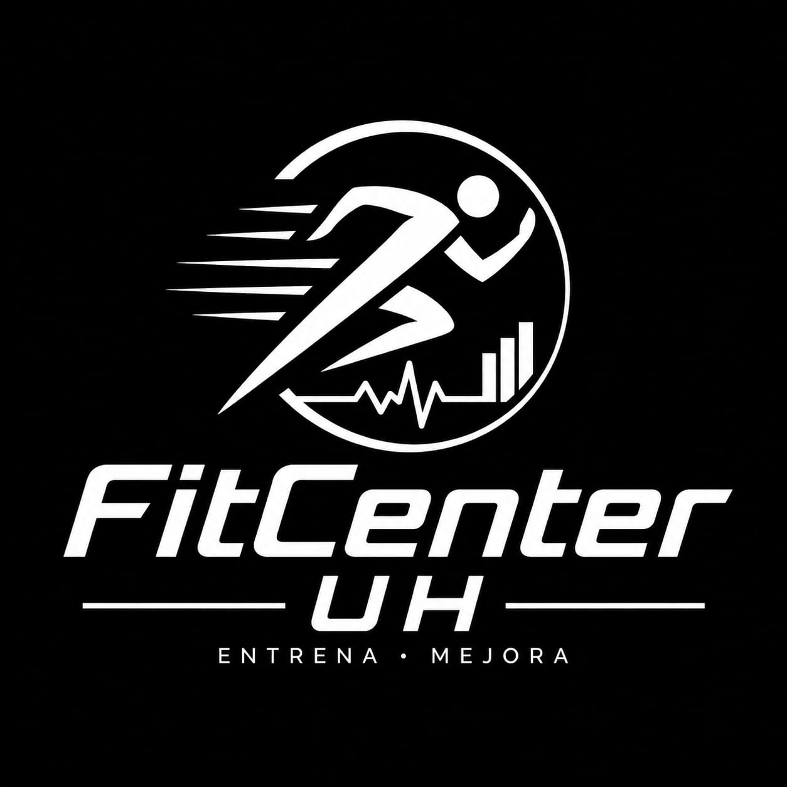

Fuerza4–5 días
Bulking
Gana masa muscular y fuerza con sobrecarga progresiva y una estructura enfocada en movimientos compuestos.
Ver programaMovimiento con propósito
Tres rutas de entrenamiento, una meta clara: ayudarte a construir una versión más fuerte, saludable y constante de ti.

FitCenter UH
Somos una plataforma de acondicionamiento físico y bienestar personal. Diseñamos rutas claras para aumentar masa muscular, definir o perder peso de manera progresiva.
Complementamos el entrenamiento con orientación nutricional para que cada decisión —dentro y fuera del gimnasio— impulse tu progreso.
Conocer nuestra historiaElige tu dirección
Gana masa muscular y fuerza con sobrecarga progresiva y una estructura enfocada en movimientos compuestos.
Ver programaReduce grasa corporal mientras conservas músculo con trabajo de fuerza, cardio estratégico y control de intensidad.
Ver programaConstruye un hábito sostenible combinando sesiones cardiovasculares, fuerza funcional y movimiento diario.
Ver programaCómo funciona
Empieza con una ruta simple, mide tu avance y ajusta acompañado.
Elige entre ganar músculo, definir o reducir peso según tu prioridad actual.
Aplica los ejercicios, series y frecuencias recomendadas con técnica y progresión.
Solicita una valoración profesional para alinear alimentación, energía y recuperación.
Nutrición que acompaña
Conecta con profesionales que pueden ayudarte a convertir tus hábitos de alimentación en aliados de tu objetivo.
“El único límite está en tu mente.”